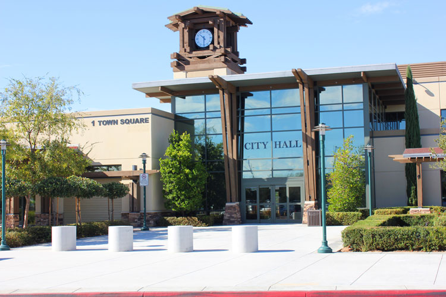
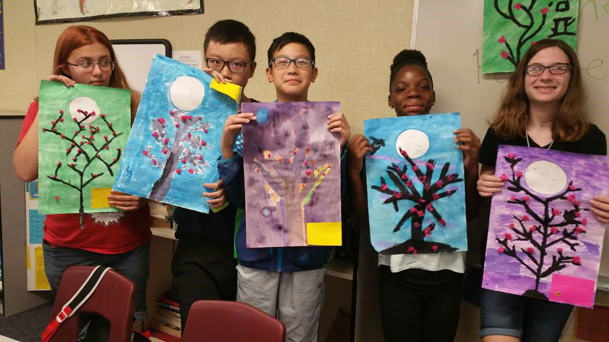

机器人&地球科学课程体验项目
五大课程强调各个学科融会贯通，注重动手实践和探索过程，激发学生好奇的天性和创新能力。引导同伴之间的合作和自主解决问题的能力，基于创新意识下，结合动手实践和探索，真正唤醒孩子与生俱来的创造力潜能。此次项目以机器人和地球科学为主题，带你走入一个精彩纷呈的世界！通过艺术课程，感悟世界艺术的美丽；通过编程，来驱动和解密世界，感受智慧的力量和赋予生命的乐趣，体验跨界思维和手脑结合的方式，全面拓展逻辑思维能力、组织能力、管理能力和创造力。
时间：2018.07.08—2018.07.28
项目简介
• 融汇五大课程（艺术、机器人、音乐、舞蹈、地球科学），激发探索和创造能力。
• 通过机器人和地球科学课程的主题式学习，唤醒孩子与生俱来的动手实践和创新思维能力。
• 课外研习、名校探访，全方位体验和感受每个学生眼中不一样的美国文化。
• 结业后收获“文化交流小使者”证书，提升个人多元化背景。

项目特色和厚力支撑

行程安排